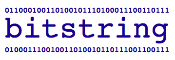

A comprehensive view of BITSCAN
BITSCAN is a C++ library dedicated to efficient processing of bit strings. In programming, a bit string is a data structure that stores collections of bits (ones and zeros). It gets interesting when these bits have semantics, i.e. refer to a Boolean property of a group, so that each element is identified by a bit in the chain. In previous posts I have repeatedly stated that BITSCAN “is a useful library to manage bit strings”, and that was that. Readers of our blog have questioned the usefulness of bit strings in practice so I will start this post explaining some common situations in which bit strings may be an alternative to more common data structures.

Bit strings in practice
Say you need to store and compare subsets of different numbers from 1 to N; or possibly you need to encode that a collection of objects belong to a set, or perhaps reason with two such collections and find those common to both. These situations are quite frequent in practice and commonly solved by mapping objects to identifiers, storing them (typically in some predefined order) in containers and employ their built-in methods to make the required inferences.
Here is an example: a subset of students takes an exam; each student has a different ID and writes it on the exam. A possible (non-efficient) solution to the query as to which students did not assist using STL collections appears below:
1 2 3 4 5 6 7 8 9 10 11 12 13 14 15 16 17 18 19 20 21 22 23 24 25 26 | //… appropiate headers template<class Collection> void printCol(Collection& col){ copy(col.begin(), col.end(), ostream_iterator<Collection::value_type>(cout, " ")); } #define NUMBER_OF_STUDENTS 5 void main(){ set<int> s_ids; // student ids set<int> e_ids; // exam ids for(int i=1; i<=NUMBER_OF_STUDENTS; i++){ s_ids.insert(i); if((i%2)==0) e_ids.insert(i); } //students which did not assist set<int> s_not_assist; set_difference(s_ids.begin(), s_ids.end(), e_ids.begin(), e_ids.end(), insert_iterator<set<int>> (s_not_assist, s_not_assist.begin()) ); printCol(s_not_assist); } |
In the PREVIOUS example each call to insert is logarithmic and set_difference is linear in the number of total students. Now compare with a bit string encoding for exams and students (a 1-bit indicates membership):
1 2 3 4 5 6 7 8 9 10 11 12 13 14 15 16 17 18 19 20 21 22 | #include "pablodev/bitscan/bitscan.h" //BITSCAN header in biicode repository using namespace std; #define NUMBER_OF_STUDENTS 5 void main(){ bitarray s_ids(NUMBER_OF_STUDENTS); // student ids bitarray e_ids(NUMBER_OF_STUDENTS); // exam ids s_ids.set_bit(0,NUMBER_OF_STUDENTS-1); for(int i=1; i<=NUMBER_OF_STUDENTS; i++){ if((i%2)==0) e_ids.set_bit(i-1); //id is 0 based } //students which passed the exam bitarray s_not_assist(s_ids); s_not_assist.erase_bit(e_ids); //I/O s_not_assist.print(); } |
From the point of view of efficiency, students are inserted in the (bit) sets in constant time. The reasoning is computed in the erase_bit function in linear time, but there is a reduction by a constant factor related to register word size (typically 64 in today’s computers) because processing occurs in chunks of bit blocks. Moreover, the code is no less readable (possibly more readable) than its counterpart and slightly more compact.
Note that the example did not intend to suggest that bit strings are better than typical STL collections (exlcude std::bitset) or anything like that. It only shows that bit strings can be a useful alternative to consider in everyday programming.
Data types available in BITSCAN
Having made a case in favor of bit strings I will now comment briefly on the data types available in BITSCAN and the kind of problems they address. As stated in previous posts, I developed BITSCAN to deal with hard combinatorial optimization problems in the graph domain. Why did I not use other common solutions such as std∷bitset or boost∷dynamic_bitset containers? Simply because the majority of functions I required back then (say almost a decade ago) were not built-in (they still aren’t, specifically those related to different types of efficient bit scanning) not to mention the fact that the size of std∷bitset has to be hard wired at compile time. Also some critical optimization issues appeared which required ad hoc solutions. I therefore decided to start from scratch at my own risk. The types in BITSCAN are a result of a decade of experience in algorithmic optimization. The current release is intended to share this knowledge in the hope that it is useful to others and that it may be improved. In this sense I find Biicode ideal for managing and sharing the code.
Back to business, and sorry for the digression. The main types in BITSCAN are bitblock, bitarray and sparse_bitarray and most of the time you will only be using these. Other types are meant for compilers which do not accept assembly or intrinsic instructions (i.e. simple_bitarray, simple_sparse_array) or some specific optimization (i.e. watched_bitarray). I will leave the latter types for a future post.
TYPE bitblock
The bitblock type is a wrapper for bit twiddling inside 64 bit numbers. It includes typical least- significant-bit (LSB) and most-significant-bit (MSB) functions as well as different implementations of population counts (i.e. number of 1-bits in the number). Useful inline macros are MASK_1 and MASK_0 which change bits in a predefined range (see example below).
1 2 3 4 5 6 7 8 9 10 11 12 13 | #include <iostream> #include "pablodev/bitscan/bitscan.h" using namespace std; void main(){ BITBOARD bb=0xFFFF; cout<<"number of 1-bits in bb:"<<bitblock::popc64(bb)<<endl; //useful masks bitblock::print(bb & bitblock::MASK_0(4,8)); //removes bits 4-8 from bb bitblock::print(bb | bitblock::MASK_1(4,8)); //sets bits 4-8 in bb } |
TYPE bitarray
bitarray extends the bitblock type to arrays of bitblocks and it is BITSCAN’s basic type. Besides typical operations which may be found elsewhere (bit masks etc.), the wrapper contains a number of optimizations mainly concerned with extracting the information from bit strings (alias bitscanning) which I have found pretty useful when solving combinatorial problems. In particular:
- Caching bitblock index and position of the last bit scanned in a bit scanning loop.
- Specific implementation for destructive (simultaneous scanning and deletion) scans.
- Specific implementation for reverse scans (i.e. from last to least significant bit of the bitstring).
Here is a simple example of how to implement normal and destructive scanning loops with BITSCAN:
1 2 3 4 5 6 7 8 9 10 11 12 13 14 15 16 17 18 19 20 21 22 23 24 25 26 27 28 29 | #include <iostream> #include "pablodev/bitscan/bitscan.h" using namespace std; #define POPULATION_SIZE 100 void main(){ bitarray bba(POPULATION_SIZE); bba.set_bit(0, POPULATON_SIZE-1); //sets all bits to 1 //bit scanning loop int nBit=EMPTY_ELEM; bba.init_scan(bbo::NON_DESTRUCTIVE); while(true){ nBit=bba.next_bit(); if(nBit==EMPTY_ELEM) break; cout<<nBit<<" "; } cout<<endl; //bit scanning loop (destructive) nBit=EMPTY_ELEM; bba.init_scan(bbo::DESTRUCTIVE); while(true){ nBit=bba.next_bit_del(); if(nBit==EMPTY_ELEM) break; cout<<nBit<<" "; } } |
It is worth noting that bit scanning introduces critical overhead compared to standard data structures. I strongly recommend to avoid it as much as possible in critical problem solving routines in favor of reasoning with bit masks (the good part). Still, at some point you will surely need to enumerate the elements (1-bits) in the bit sets and the above functions (and others available in BITSCAN) will come in handy.
TYPE sparse_bitarray
This type introduces specific functionality to deal with the sparse case. A sparse bit string typically holds many more 0-bits than 1-bits (usually the useful chunks of information) and using the general purpose bitarray type will generally lead to dealing with a lot of useless chunks of 0-bits. I recommend to use the sparse_bitarray type in such cases. The interface for most operations is very much the same. BELOW is the code for the normal bit scanning loop in the previous examples but using the sparse type.
1 2 3 4 5 6 7 8 9 10 11 12 13 14 15 16 17 18 19 20 21 22 | #include <iostream> #include "pablodev/bitscan/bitscan.h" using namespace std; #define POPULATION_SIZE 100 void main(){ sparse_bitarray bba(POPULATION_SIZE); bba.set_bit(0, POPULATION_SIZE-1); //sets all bits to 1 //bit scanning loop int nBit=EMPTY_ELEM; if(bba.init_scan(bbo::NON_DESTRUCTIVE)!=EMPTY_ELEM){ while(true){ nBit=bba.next_bit(); if(nBit==EMPTY_ELEM) break; cout<<nBit<<" "; } } cout<<endl; } |
Notice that the code is exactly the same as for the bitarray type (now sparse_bitarray) with the exception of the empty checking condition at the beginning of the bit scanning loop:
1 | if(bba.init_scan(bbo::NON_DESTRUCTIVE)!=EMPTY_ELEM)(…} |
This is necessary because sparse bitarrays have empty semantics: an empty bitarray (i.e. with no allocated bitblocks) might just as well not be used as refer to a bitset exent of 1-bits. Either way entering the main scanning loop will result in an error during execution.
Current status
As indicated in other posts, BITSCAN is still very much in Alpha but it is being actively developed. As such it suffers from lack of proper doc, non standardization of names and namespaces etc. Still, it is very simple to use and including it in your projects requires no effort using Biicode (just include the header #include “pablodev/bitscan/bitscan.h” and you are done). It has been tested both in Linux and Windows (64 bit).
If you are wondering about efficiency, BITSCAN is in the core of BBMC [1][2][3] and PASS [4], two state of the art algorithms for the NP-hard maximum clique and vertex coloring problems respectively. Also worth reading is a performance comparison with STL and BOOST in [5]. If you finally decide that it is worth a try please read the legal stuff. In case you use it for research purposes, please include the indicated citations. Finally, any feedback or improvement is most welcome.
[1] An exact bit-parallel algorithm for the maximum clique problem
[2] An improved bit parallel exact maximum clique algorithm
[3] Relaxed approximate coloring in exact maximum clique search
[4] A new DSATUR-based algorithm for exact vértex coloring
[5] BITSCAN efficiency at a glance
Related Posts